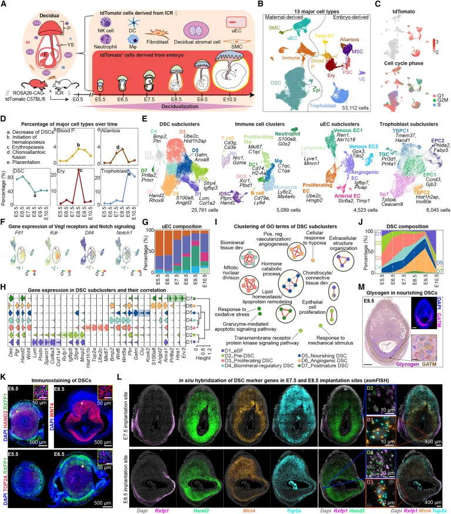
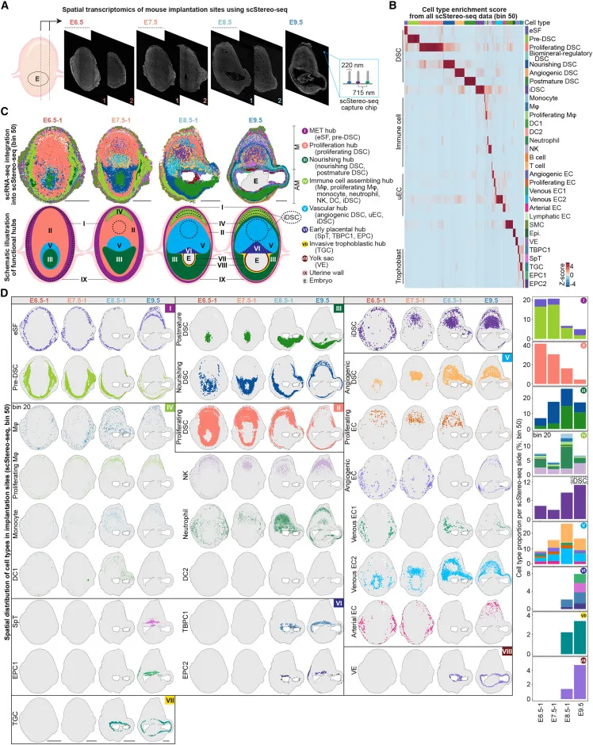
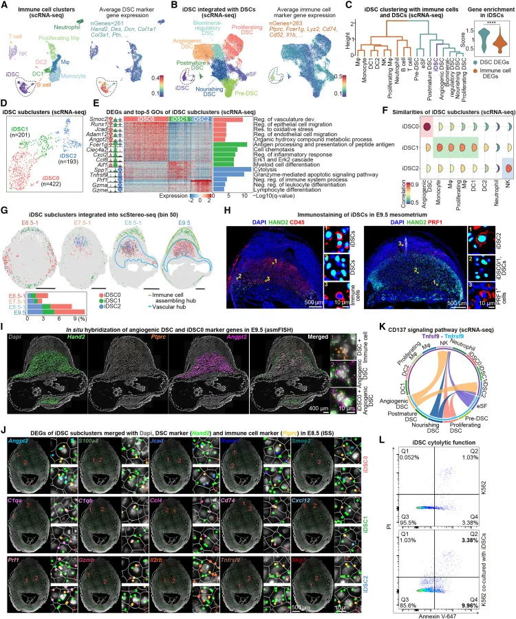
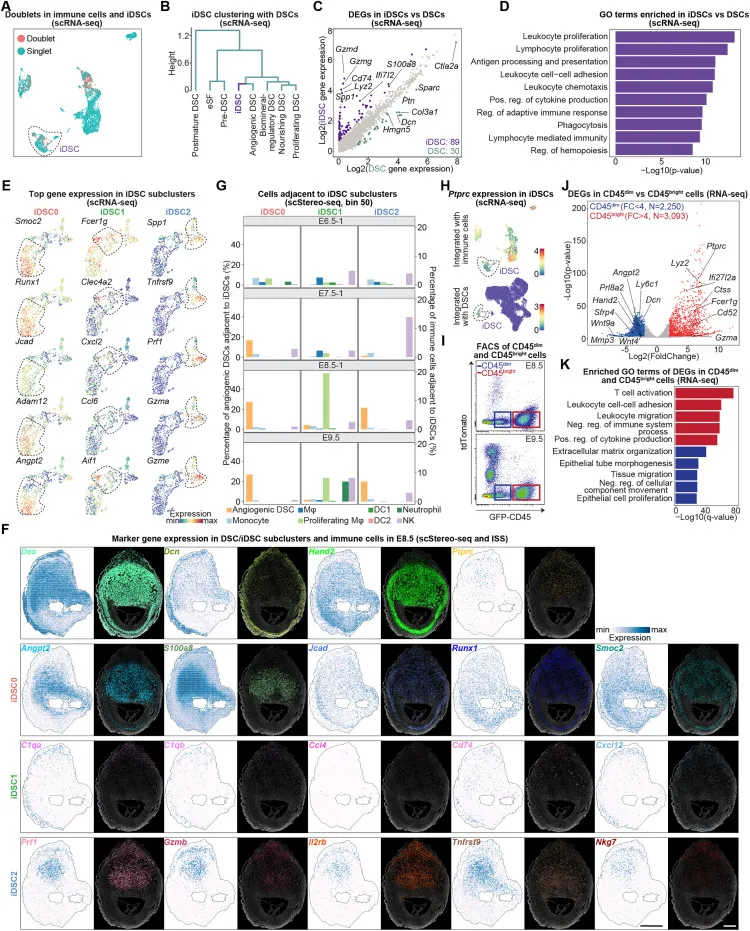
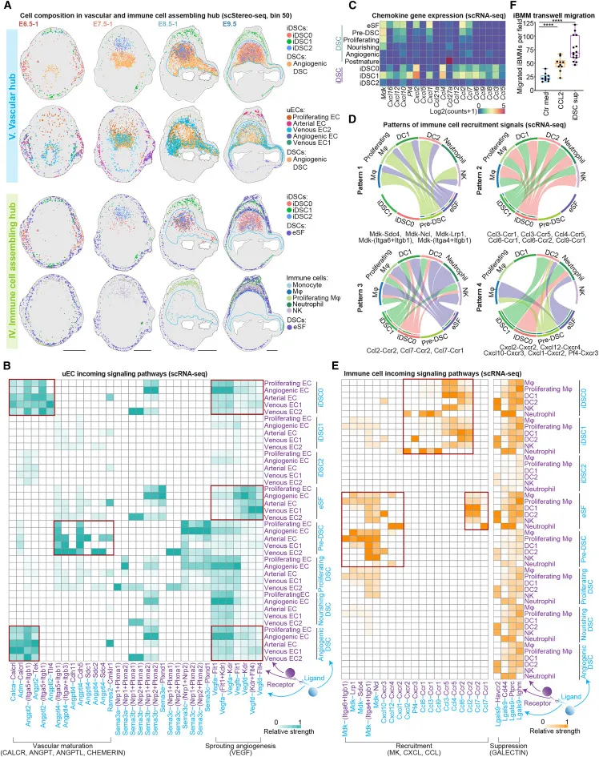
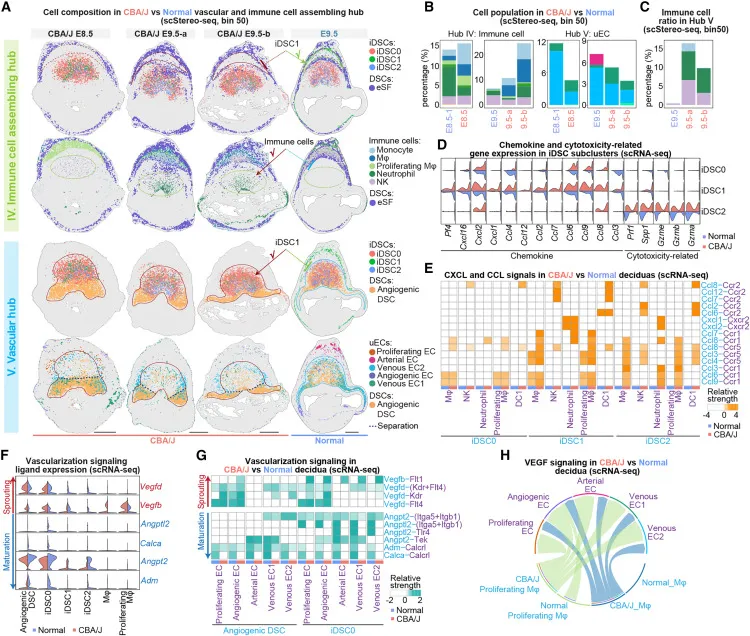

有免疫特征的基质细胞，有没有可能是双细胞？
原文：https://mp.weixin.qq.com/s?__biz=MzAwMzIzOTk5OQ==&mid=2247506493&idx=1&sn=ed65c6b0738a1fb8492da0b4ecdc9c63&chksm=9b3ca36dac4b2a7b4ca45f169526c6ed51777e20811d50c2892e683eee405c25607a42cc7a66#rd 合集：单细胞教程全收录 / 空间转录组 / 文献速递
写在前面
读到一篇立题依据、分析技巧、美观程度、科研思路都很顶级的《Cell》文章，题为'patiotemporal insight into early pregnancy governed by immune-featured stromal cells'。作者发现一种具有免疫特征的蜕膜基质细胞(immune-featured decidual stromal cells,iDSC)，顾名思义，这是一种既能够表达免疫细胞marker且具有作为基质细胞的DSCs特征的细胞类型。正常的 iDSCs能够分别在免疫细胞组装和血管枢纽处募集和抑制免疫细胞募集和抑制，控制血管形成，并促进细胞溶解，从而在后期建立蜕膜稳态；而功能失调 和空间紊乱的 iDSC 会导致血管中枢中免疫细胞的异常积累，从而破坏蜕膜枢纽规格，并最终导致 DBA/2 交配的 CBA/J 小鼠出现妊娠并发症。
主要内容
我非生殖口研究者，背景知识大家直接看原文的Introduction。作者分别对各组样本进行了10X Genomcis平台的单细胞(Figure 1)与华大stereo-seq平台的空间转录组(Figure 2)测序。完成了细胞注释、亚群分析、功能富集、基因集评分、空转梯度分bin、空间共表达、免疫荧光校验等分析/操作，初步揭示了胚胎、卵黄囊、胎盘和蜕膜等组织的细胞组成与生物学功能。

Figure 1

Figure 2
免疫细胞对于蜕膜稳态至关重要。然而，在对免疫细胞进行重新聚类后，作者意外地发现了一个同时表达免疫细胞相关和典型DSC标记基因的细胞簇(Figure 4A-B)。通过使用 DoubletFinder ，作者排除 了这些细胞是双细胞 的可能性(Figure S4A)。基于转录表达矩阵的聚类和基因富集分析表明，与免疫细胞相比，这些细胞与DSC（血管生成DSC）的相关性更高(Figure 4C)。因此，作者将其命名为iDSCs，这是一种特殊类型的DSC，具有免疫细胞相关基因的富集和某些免疫反应激活活性。通过对 iDSC的亚群分析 ，作者进一步发现三个具有不同转录组学特征的亚簇，参与各种生物学过程(Figure 4 D、4E和 S4E)。iDSC0（Angpt2、Runx1、Jcad 和 Adam12）与脉管系统发育有关，iDSC1（Clec4a2、Cxcl2、Ccl6 和 Aif1）与炎症反应相关，iDSC2（Prf1、Gzma/e、Tnfrsf9 和 Spp1）参与细胞溶解和细胞凋亡（图 4E 和 S4E; 表S3）。此外，基于差异表达基因 （DEG） 的细胞相关性分析显示，iDSC0 具有与血管生成 DSC 相似的特征，而 iDSC1 和 iDSC2 分别具有髓样细胞和 NK 细胞特征 （Figure 4F）。值得一提的是，这三个亚群在样本中具有不同的空间分布特征(Figure G-I)。

Figure 4

Figure S4
在对iDSC的进一步研究中，作者发现iDSCs可以通过激活颗粒酶介导的凋亡信号通路 诱导细胞溶解我们进一步研究了不同iDSC子簇之间的功能差异。配体受体信号转导分析显示，NK细胞和高表达Tnfrsf2的iDSC9均可通过CD137通路被血管生成DSC激活（Figure 4K），从而导致穿孔素和颗粒酶 基因表达。随后，作者将 iDSC 与人白血病细胞系 K562 一起孵育，能够观察到 iDSC 能够诱导癌细胞细胞溶解 （Figure 4L）。因此，我们提出，血管生成 DSC 通过 CD2 信号传导激活 iDSC（主要是 iDSC137）可能会触发颗粒酶介导的细胞凋亡途径，这可能有助于中间体区域胎盘生长的空间清除。
蜕膜血管形成和免疫细胞募集和抑制对于成功怀孕至关重要。 E7.5 着床部位的中间体区域，增殖和静脉 EC 分别与 iDSC 和血管生成 DSC 共定位。在 E8.5 之后，几个 uEC 亚簇与血管生成 DSC、iDSC0 和 iDSC2 聚集在一起，最终形成血管中枢。动脉EC分布在E9.5的免疫细胞组装和血管中枢（Figure 2C，2D，5 A，S2 C和S2E）。这些结果表明，各种ECs的动态空间分布和状态跃迁与血管生成 DSCs和iDSCs高度相关，可能在驱动中体区血管枢纽的形成中发挥关键作用。此外，作者观察到 ANGPT（L）/CALCR 和 CHEMERIN 信号的配体主要在血管生成 DSC 和 iDSC0 中表达（Figure 5B 和 S5C）。这些配体与静脉和动脉内皮细胞上表达的受体相互作用，可能触发肾小管生成和血管舒张，并在成功妊娠中起关键作用。值得注意的是，与uEC类似，免疫细胞也始终与iDSCs、eSFs和pre-DSCs共定位，在妊娠早期显示出动态改变（Figure 2C、2D、5A、S2C和S2E）。，当iDSCs出现在中体区域时，免疫细胞，包括NK细胞、单核细胞和增殖的巨噬细胞，以及血管生成DSCs和uECs也开始在那里聚集。与正常妊娠小鼠相比，DBA/2 配对的 CBA/J 小鼠中与免疫细胞募集和血管形成相关的信号通路的改变。有趣的是，作者发现流产易患小鼠的 iDSC1 的 Ccl7/8/12 和 Cxcl1 表达增加 。

Figure 5
此外，异常的 iDSC2 通过激活 Ccl4/6/8 和 Cxcl2 获得免疫细胞募集能力，而其颗粒酶诱导的凋亡功能可能由于颗粒酶表达降低而受到抑制（图Figure 7D、7E、S7 和 S8C）。因此，iDSC1的空间紊乱以及iDSC2 通过CXCL/CCL信号获得募集能力 ，导致流产易感小鼠血管中枢内各种免疫细胞的异常组装。

Figure 7
参考： Yang M, Ong J, Meng F, Zhang F, Shen H, Kitt K, Liu T, Tao W, Du P. Spatiotemporal insight into early pregnancy governed by immune-featured stromal cells. Cell. 2023 Sep 28;186(20):4271-4288.e24.
最后聊聊
看到文章标题时我原本是有些怀疑的，“具有免疫特征的基质细胞”听起来很容易让人联想到双细胞，即使 作者通过doubletFinder进行了双细胞的鉴定(懂的都懂，参数失之毫厘、结果差之千里；且 doubletFinder的双细胞鉴定需要依赖分群结果，此时组织中其它cluster的特征也会影响双细胞的鉴别)。深入到文章中，iDSCs总与免疫细胞类型发生共定位 更免不了让人怀疑加重。但 作者解析了iDSCs通过Ccl4/6/8等招募免疫细胞的分子机制并通过CD45(免疫细胞marker)阴性 的流式筛选接Bulk RNA-Seq的结果中也观察到了iDSCs的存在，这些证据打消了我的顾虑。另一方面，作者证明了iDSCs各亚群在正常妊娠中免疫细胞招募中不可或缺的作用且发现在流产易感小鼠的着床部位存在着的异常 iDSC，算是从正反两方面 为iDSC的生物学功能正名。所以，呼应本推送开头，这是一篇立题依据、分析技巧、美观程度、科研思路都很顶级 的文章，值得大家阅读原文。更多空转的分析技巧可见：空间转录组学习手册合辑

如何联系我们

 公众号后台消息更新不及时，超过48h便不许回复读者消息，这里给大家留一下领取资料及免费服务器(生信分析为什么要使用服务器？)的微信号 ，方便各位随时交流、提建议（科研任务繁重，回复不及时请见谅）。此外呼声一直很高的交流群 也建好了，欢迎大家入群讨论：
公众号后台消息更新不及时，超过48h便不许回复读者消息，这里给大家留一下领取资料及免费服务器(生信分析为什么要使用服务器？)的微信号 ，方便各位随时交流、提建议（科研任务繁重，回复不及时请见谅）。此外呼声一直很高的交流群 也建好了，欢迎大家入群讨论：
大家可以阅读完这几篇之后添加给生信入门初学者的小贴士 如何搜索公众号过往发布内容

 您点的每个赞和在看，我都认真当成了喜欢
您点的每个赞和在看，我都认真当成了喜欢